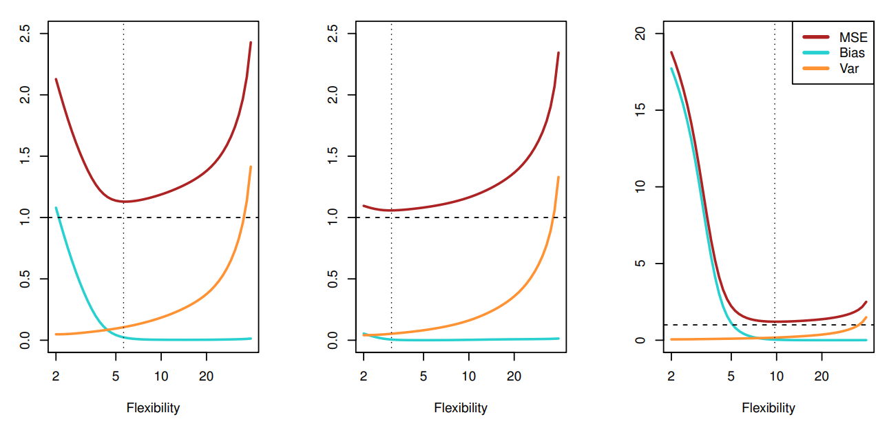

Irreducible Error is the variance in the actual dataset, so not matter how good our machine learning model is, we cannot eradicate it. The two terms we can tackle, however, are the squared Bias and Variance.
Bias is the amount by which the average of our estimate differs from the true mean. It is the error introduced by approximating a complicated real-life problem with a simple model. In general, more flexible models like random forests have lower bias, whereas simpler models like linear regressions exhibit high bias.
Variance is the expected squared deviation of \(\hat{f}(x_0)\) around its mean. Put in another way, it is the amount by which \(\hat{f}\) would change if we trained the model on a different training set. In general, more flexible models have high variance.
In broad terms, Bias relates to underfitting the model to the training data in hopes of generalizing to the real world, whereas Variance is overfitting to the training data in hopes that the training data accurately reflects the real world. There is merit in underfitting the model because it is reasonable to assume that the training data does not perfectly represent the real world. On the other hand, there is merit in fitting our model to the training data because it is reasonable to assume that the training data is a good approximation of what goes on in the real world! There is no contradiction here. Although the training data does not perfectly represent the real world, it is a good approximation to it. This leads to what is known as the 'Bias-Variance Tradeoff'.  The three figures above depict the squared bias (blue), variance (orange) and irreducible error (dashed) for a fitted regression model to three data sets. As the model becomes more flexible, Bias decreases and Variance increases. Alternatively, as the model becomes less flexible, Bias increases and Variance decreases. The optimal point is indicated by a vertical dashed line. The goal is to determine the amount of model flexibility that minimizes the sum of the squared Bias and Variance (note the squared Bias and Variance are both positive). Machine learning methods usually have tuning parameters which control model complexity and cross-validation (CV) is typically used to find the optimal value.